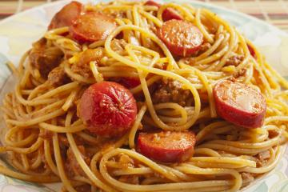

Macarrão com Salsicha

Descrição
Receita de um simples e delicioso macarrão com salsicha ao molho.
Ingredientes
- 1/2 cebola pequena
- sazón de massas
- molho de tomate
- 5 salsichas
- 1 colher de óleo
- 1 tomate
- 100 ml de água
- 300 g de macarrão parafuso
Modo de Preparo
- Após cozinhar o macarrão com água e sal escorra, lave e reserve.
- Na panela adicione, cebola picada, o óleo, e o sazón de massas, deixe dourar.
- Em seguida coloque o tomate picado, o molho de tomate, mexa um pouco e depois acrescente a salsicha.
- Coloque a água e tampe a panela, deixe agir.
- Depois que tiver fervendo, retire um pouco do caldo e reserve num copo.
- Adicione o macarrão na panela, mexa, acrescentando aos poucos o caldo, até ficar suculento!